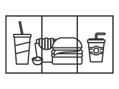
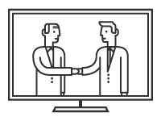
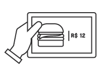
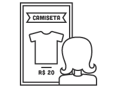

| • Home | • Empresa | • Clientes | • Time | • FAQ | • Contato | |
| • B2Midia | • Admin | • Help | • Drive | • RunRunIt | • Transfer |
Sobre Nós |
A B2 Mídia, fundada em Março de 2010, atua no segmento de Sinalização Digital como uma empresa integradora de plataformas, focada em soluções para comunicação interna veiculando informações em diversos meios como Televisores, Monitores, Painéis de Led, PCs, Dispositivos Móveis, entre outros. |
| WORK B2 |
|
|  |  |
| MENU BOARD | MURAL DIGITAL |
Também conhecido por Cardápio Digital, se dá pela |
Comunicados do RH, Aniversariantes do dia, Empresa |
|  |  |
| CARDÁPIO DIGITAL | VITRINE DIGITAL |
Proporcionar a melhor experiência de compra para o |
Solução voltada ao mercado varejista que se dá pela |